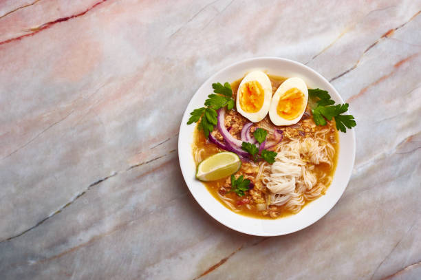

Mohinga is arguably Myanmar’s most famous dish and is a must try during your time in the country. All across Myanmar Mohinga is a soup that is served hot in the mornings at breakfast time and is the perfect way to start your day.
While traditionally Mohinga is eaten at breakfast, it is also possible to order it throughout the day, and we’ve found many of our travellers prefer it best in the afternoon as a little snack. The soup contains fish, noodles, an onion paste, and is often eaten with an egg and crackers as well. Very nutritious!
You can find Mohinga sold at many street vendors and also restaurants across Myanmar. This is also where many of the locals will eat Mohinga as it can be quite labour intensive to create at home, with the soup needing to simmer for a long time to get all of the flavours out.
How To Prepare Mohinga
Add your choice of fish (whole) into a pot of water along with lemongrass, turmeric, salt and pepper, and bring to the boil. Allow this to simmer for 10 minutes or until the fish has cooked through. Take the fish out of the pot and wait for it to cool down. Once it is possible to hold the fish safely, remove the meat from the bone and set aside. Next, pour the fish broth through a sieve and also place to one side.

Next it’s time to chop up the onions, ginger, chilli, and lemongrass stalks before adding them to a mortar, along with turmeric and paprika, where you can crush them together.
Heat some oil in a pan (low to medium heat), add shallots and the ginger paste into the pan and let simmer for 15 minutes. Next pour in the fish broth to the mixture, along with rice flour and remember to stir regularly for several minutes. Finally add the fish meat and let it cook for around another 15 minutes.
Serve the soup with a handful of noodles (added towards the end of cooking), along with crackers, crushed garlic and any other herbs you would like to add (obviously to taste).